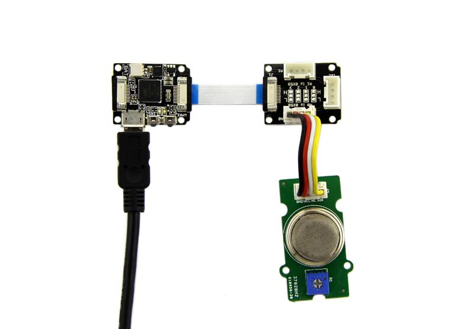
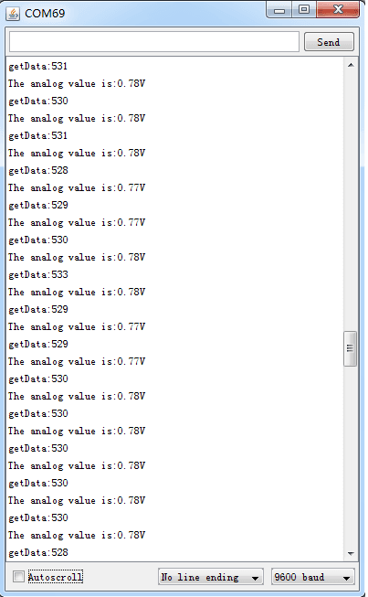
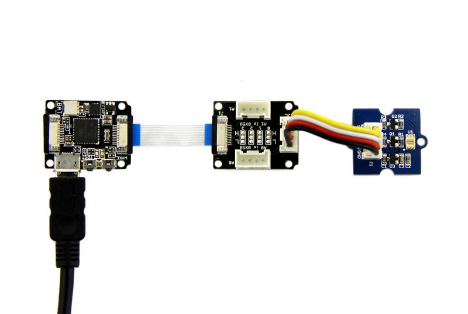

Xadow Grove Adaptor is a device that converts Grove interface to Xadow Interface to compatible with Xadow System. It can achieve this function: analog signal from two analog Grove interface will output by Xadow I2C bus through ADC. The signal from Grove I2C Interface will directly lead to Xadow I2C bus without conversion. The A/D conversion based on ADCC121C021, a 12-bit precision ADC, create high precision.
Next we will show you how to read the output value of Grove modules by using Xadow Grove Adaptor.
If measure analog signal Grove module outputs, you need to connect Grove module to analog Grove Interface where they are marked as "A0" and "A1".
The Hardware Installation should be:

Here Grove - Gas sensor outputs analog signal is connected to AO, so the I2C Address applied to the test code is 0x58(default). In other words, the I2C Address should be 0x59 when Grove - Gas Sensor connect to A1 interface.
The test code is:
#include <Wire.h>
#include <Streaming.h>
#define ADDR_ADC121 0x58
#define V_REF 3.00
#define REG_ADDR_RESULT 0x00
#define REG_ADDR_ALERT 0x01
#define REG_ADDR_CONFIG 0x02
#define REG_ADDR_LIMITL 0x03
#define REG_ADDR_LIMITH 0x04
#define REG_ADDR_HYST 0x05
#define REG_ADDR_CONVL 0x06
#define REG_ADDR_CONVH 0x07
unsigned int getData;
float analogVal=0; // convert
void init_adc()
{
Wire.beginTransmission(ADDR_ADC121); // transmit to device
Wire.write(REG_ADDR_CONFIG); // Configuration Register
Wire.write(0x20);
Wire.endTransmission();
}
void read_adc() //unsigned int *data
{
Wire.beginTransmission(ADDR_ADC121); // transmit to device
Wire.write(REG_ADDR_RESULT); // get result
Wire.endTransmission();
Wire.requestFrom(ADDR_ADC121, 2); // request 2byte from device
delay(1);
if(Wire.available()<=2)
{
getData = (Wire.read()&0x0f)<<8;
getData |= Wire.read();
}
Serial.print("getData:");
Serial.println(getData);
delay(5);
Serial.print("The analog value is:");
Serial.print(getData*V_REF*2/4096);
Serial.println("V");
}
void setup()
{
Serial.begin(9600);
Wire.begin();
init_adc();
}
void loop()
{
read_adc();//adcRead);
delay(50);
}
Upload code to Xadow Main Board, then open the serial monitor to observe output value：

You need to connect Grove module to I2C interface of Xadow Grove Adaptor when communication mode of Grove module is I2C. Now the sever of Xadow Grove Adaptor is delivering signal to Xadow I2C bus without ADC.
Taking Grove - Digital Light Sensor as example, let's learn its usage.
Hardware Installation：

Download the code：
/* Digital Light sensor demo V1.0
* Connect the sensor to I2C port of Arduino to use.
*
* By:http://www.seeedstudio.com
*/
#include <Wire.h>
#include <Digital_Light_TSL2561.h>
void setup()
{
Wire.begin();
Serial.begin(9600);
TSL2561.init();
}
void loop()
{
unsigned long Lux;
TSL2561.getLux();
Serial.print("The Light value is: ");
Serial.println(TSL2561.calculateLux(0,0,1));
delay(1000);
}

.
The ADC IC ADC121C021 used in Xadow Grove Adaptor have been adopter on Grove - I2C ADC. Of course, the way to change I2C Address are same. Please refer to Reference part of Grove - I2C ADC about the varying method. In addition,"0" and "1" on board are the address varying area of A0 interface,"2" and "3" are the address varying area of A1 interface.